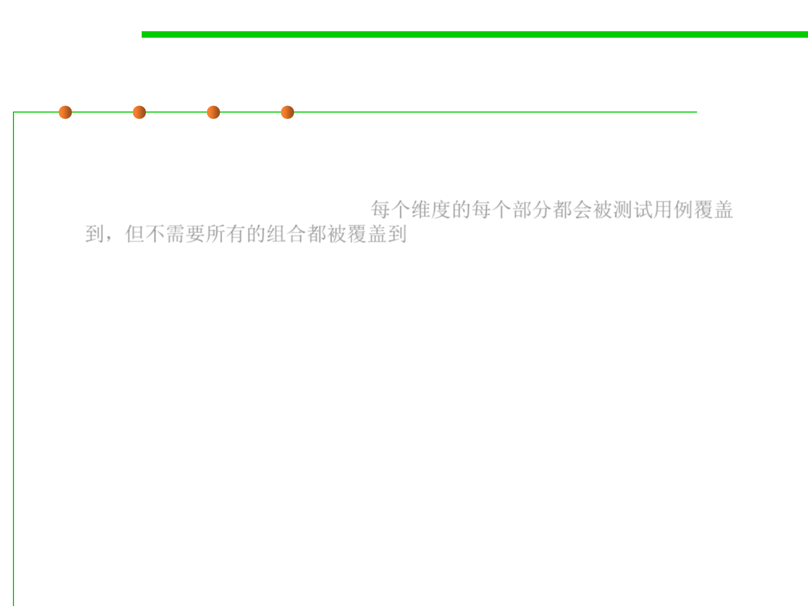

7.5 Testing and Test-First Programming
Two Extremes for Covering the Partition
▪ Cover each part(覆盖每一个分区)
– Every part of each dimension is covered by at least one test case, but not
necessarily every combination. 每个维度的每个部分都会被测试用例覆盖
到，但不需要所有的组合都被覆盖到
– With this approach, the test suite for max might be as small as 5 test cases
if carefully chosen. That’s the approach we took above, which allowed us
to choose 5 test cases.
▪ Often we strike some compromise between these two extremes,
based on human judgement and caution, and influenced by white-
box testing and code coverage tools.